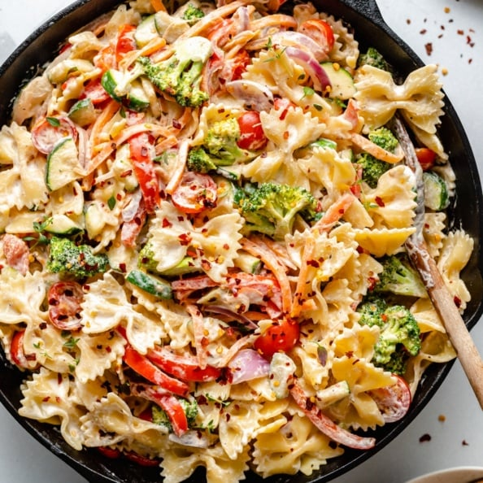

Odin Recipes
Vegan Pasta Primavera with Creamy Garlic Cashew Sauce

Description
Delicious vegan pasta primavera packed with tender vegetables and tossed in a creamy garlic cashew sauce.
This easy vegan pasta primavera recipe has wonderful flavors and plenty of protein and healthy fats for a comforting plant-based meal the whole family will love!
Ingredients
Main
- 400g penne pasta
- 2 tbsp olive oil
- 1/2 medium red onion, sliced lengthwise
- 1 large carrot, peeled and cut into matchsticks
- 1 medium red bell pepper, cut into thin strips
- 2 cups small broccoli florets
- 1 ½ cups cherry tomatoes, halved
- 2 medium zucchini, sliced and quartered OR cut into thin strips
- 1/2 teaspoon italian seasoning
For the Sauce
- ¾ cup raw cashews
- ½ cup water
- 2 tablespoons fresh lemon juice
- 2 cloves garlic
- 1 teaspoon salt
- 1/4 teaspoon onion powder
- Freshly ground black pepper
For Serving
- Red pepper flakes
- Extra salt and black pepper, if desired
- Garlic costini/garlic bread
Instructions step by step
- Preheat oven to 175 degrees C. Toss potatoes with olive oil and sprinkle with salt and pepper. Place on a baking sheet and roast for 30-35 minutes until just tender.
- Remove potatoes and halve lengthwise. Carefully scoop out a circle of potato and place in a large bowl. Place shells back on baking sheet and cook another 10 minutes to crisp the shells. Let cool.
- Add the mayo, relish, vinegar, mustard, paprika and pinch salt and pepper to the potato pulp and mash well until combined, using a electric mixer or potato masher. Season to taste with salt and pepper.
- Spoon a dollop of the mixture back into the potato shells and garnish with dill.